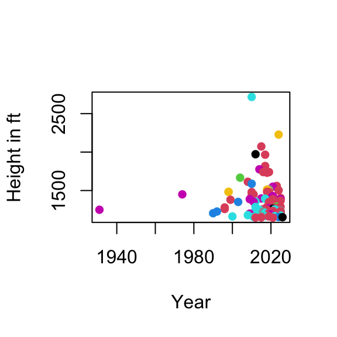
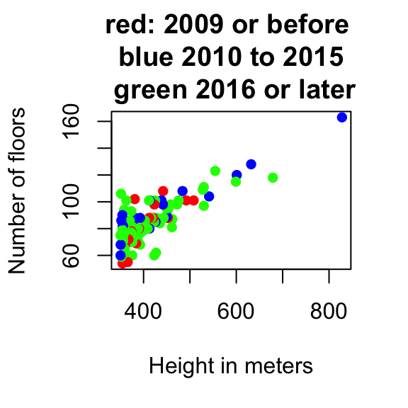
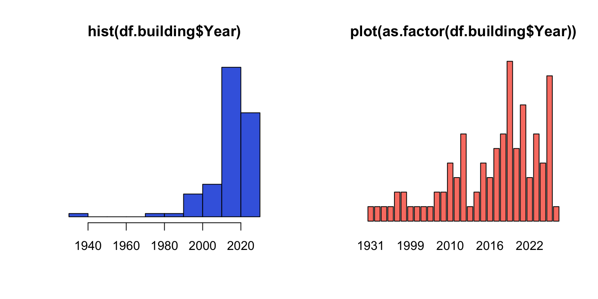

Lecture 2: Tallest building
Export and import a dataset
File path
You need to specify the location of your file when you export or import a dataset. For simplicity:
In general:
- Use “/” and to navigate through folders
- Use “../” to go up a folder
- If you want to check your current folder, use (“get working directory”)
- (To a csv file, use )
- test
- test
- test
- test
- test
- test
- test 111
Different types of data; factors
Types of data
- Basic types: numeric, double, logical, character, integer
- Use or to check
Types of data
- Use functions of the form to switch between different types
Data modification
Putting things together…
Take a look at the Floors variable. This format is difficult to work with. To parse a text using R, you need to be very specific about the text pattern. This is done using “regular expression” (a pattern language used to search, match, and manipulate text).
df.building$Floors
df.building <- df.building %>%
mutate(
Floors_num = str_extract(Floors, "^\\d+") %>%
as.integer(),
Floors_additional = str_extract(Floors, "(?<=\\(\\+ )\\d+") %>%
as.integer(),
Floors_additional_text = str_extract(Floors, "(?<=\\d )[^(]+(?=\\))") %>%
str_trim()
)
# double check
str(df.building)Factors
- is entered as character (i.e., text) data
[1] "character" [1] "United Arab Emirates" "Malaysia" "China"
[4] "Saudi Arabia" "South Korea" "United States"
[7] "Taiwan" "Hong Kong" "Russia"
[10] "Vietnam" "Kuwait" "Egypt"
[13] "Indonesia" "Turkey" "Canada" - We might want to treat it as a instead
Factors
- Key difference: can be treated as numbers but cannot
[1] 13 7 2 9 2 10 14 2 2 2 11 2 4 2 14 8 15 2 7 2 7 7 2 2 2
[26] 14 2 2 14 2 14 14 13 14 14 2 2 2 13 6 4 10 2 2 2 3 2 2 13 2
[51] 2 2 14 9 2 2 5 2 13 14 13 13 2 2 2 4 8 2 2 2 13 2 2 4 14
[76] 14 13 2 2 2 2 13 13 2 2 13 13 13 13 2 2 8 12 13 1 2 2 2 [1] NA NA NA NA NA NA NA NA NA NA NA NA NA NA NA NA NA NA NA NA NA NA NA NA NA
[26] NA NA NA NA NA NA NA NA NA NA NA NA NA NA NA NA NA NA NA NA NA NA NA NA NA
[51] NA NA NA NA NA NA NA NA NA NA NA NA NA NA NA NA NA NA NA NA NA NA NA NA NA
[76] NA NA NA NA NA NA NA NA NA NA NA NA NA NA NA NA NA NA NA NA NA NA NAUseful functions for factors
[1] United Arab Emirates Malaysia China
[4] Saudi Arabia South Korea United States
[7] Taiwan Hong Kong Russia
[10] Vietnam Kuwait Egypt
[13] Indonesia Turkey Canada
15 Levels: Canada China Egypt Hong Kong Indonesia Kuwait Malaysia ... Vietnam [1] "Canada" "China" "Egypt"
[4] "Hong Kong" "Indonesia" "Kuwait"
[7] "Malaysia" "Russia" "Saudi Arabia"
[10] "South Korea" "Taiwan" "Turkey"
[13] "United Arab Emirates" "United States" "Vietnam" - Factors are often used as a . allows you to analyze data .
Canada China Egypt
2026.0 2019.0 2023.0
Hong Kong Indonesia Kuwait
1997.5 2022.0 2011.0
Malaysia Russia Saudi Arabia
2008.5 2016.0 2016.5
South Korea Taiwan Turkey
2018.0 2004.0 2024.0
United Arab Emirates United States Vietnam
2012.5 2017.0 2018.0 Canada China Egypt
351.4000 412.6417 393.8000
Hong Kong Indonesia Kuwait
409.3250 382.9000 412.6000
Malaysia Russia Saudi Arabia
509.0750 396.6333 493.0000
South Korea Taiwan Turkey
483.0500 508.0000 352.0000
United Arab Emirates United States Vietnam
400.9500 423.9000 461.2000 # A tibble: 15 × 4
Location_F `median(Year)` `mean(Height_m)` `length(Year)`
<fct> <dbl> <dbl> <int>
1 Canada 2026 351. 1
2 China 2019 413. 48
3 Egypt 2023 394. 1
4 Hong Kong 1998. 409. 4
5 Indonesia 2022 383. 1
6 Kuwait 2011 413. 1
7 Malaysia 2008. 509. 4
8 Russia 2016 397. 3
9 Saudi Arabia 2016. 493 2
10 South Korea 2018 483. 2
11 Taiwan 2004 508 1
12 Turkey 2024 352 1
13 United Arab Emirates 2012. 401. 16
14 United States 2017 424. 12
15 Vietnam 2018 461. 1Useful functions for factors
- Plotting with as a character vector is not easy
- Plotting with :

From vector to data: data frames
Data frame
In most cases, datasets in R are stored as a
- requires two indices (row, column)
- Easier: each in a data frame corresponds to a column (i.e., a variable); use to get the component
Useful functions
Exercise set 1
Print out the names of the first 5 buildings
Calculate the average height in meters of the first 5 buildings (should get 667.8)
Create a new vector, \(\texttt{ft.per.floor}\), by height (ft) / number of floors
To to an existing data frame
- Calculate the average \(\texttt{ft.per.floor}\) of buildings by Location
Canada China Egypt
10.87736 16.39246 16.77922
Hong Kong Indonesia Kuwait
15.63356 16.74667 16.92500
Malaysia Russia Saudi Arabia
17.06015 14.50640 16.98750
South Korea Taiwan Turkey
14.07748 16.50495 19.57627
United Arab Emirates United States Vietnam
15.15999 16.90919 18.67901 - Create a scatterplot of year by height (ft), colored by Location (hint: use the factor version)

Matrix
Matrix
- $ doesn’t work for getting variables from a matrix
- Subsetting can be done using square bracket:
- Variable names are now
Matrix
- All entries in are converted to characters
- This is because
- Matrices are more useful for storing only numeric values
- In comparison: recall that a data frame allows variables to have different types
A more general R object: list
List
- Suppose we also want to store these information
- We have the following R objects
- \(\texttt{df.building}\): a \(61 \times 9\) data frame
- \(\texttt{sample.size}\): a numeric value
- \(\texttt{variables}\): a character vector of size \(9\)
- Q: What if we want to store all three objects in one R object?
List
- A: Create a with three components
- Note: if a name is not provided for a component, it will be indexed by number
- List is very general: each component can be of different length or type
- Use to extract any component
- Try to print out each of the component to double check
List
- Another way to extract component: square bracket
- \(\texttt{list.building[`COMPONENT']}\) is identical to \(\texttt{list.building\$COMPONENT}\)
- Benefit of using \(\$\): no need to spell; use tab
- Benefit of using \([\texttt{" "}]\): can return more than one components in a more automated fashion
Useful functions
Handling a list is very similar to handling a data frame
You can with ; for instance:
R functions
R functions
- R functions follow the same pattern:
- Use to bring up the help menu
pipe operator (dplyr package)
The pipe operator, %>%, is a different syntax for calling R functions: FUNCTION(x) is the same as x %>% FUNCTION
For functions with multiple arguments: by default, R recognizes the argument being piped as the first argument; or you can use “.” to specify
An exercise…
- Generate a scatterplot. Can you think of a way to color it based on year, and reproduce this plot?

Sample code 1
- Create an empty vector with the same length as the number of buildings
- (Use R to tell which buildings were built in 2009 or before)
- Set the corresponding element in the empty vector to the color red (recall, for subsetting, the function is not actually needed)
- Do the same for the other colors
Sample code 2
- Create three colors
- Create index based on the year of the building
- Use index to subset the colors
NA values
NA values
- is a special value that represents missing or unavailable entries when not in quotation
- Most operations will return NA (e.g.: you don’t know the 4th value, so you cannot calculate the mean)
Exclude NA values
To avoid the issue of getting NA’s when you perform calculations, you might want to exclude the NA values
- Some functions give you the option to remove NA
- More general, use
Check for NA values
- Try to use R to tell you which value is NA
[1] 3.5 3.2 3.0 NA[1] NA NA NA NAinteger(0)- Instead, use
Other types of NA values
- NaN is also treated as NA; Inf is not treated as NA (represents infinity)
- You should check the calculations and variable types when you see NA, NaN, or Inf
More on logicals
Composite logical statements
You can combine two or more logical statements together
- ! NOT
- & AND
- | OR
%in%
- Recall, logical operators are the ones that return T/F
- Operator is another useful logical operator
Exercise set 2
- Print the names and built years of the first 3 buildings
- Print the names of buildings in the United States
- Print the names of buildings in the United States AND also built after 2015
- Print the names of buildings in the United States OR in China
- Print the names and built years of buildings built between 2010 and 2015
- Print the names and built years of the buildings built in 2010 OR in 2015
- Plot a histogram of the built year of the buildings. I’m interested to see there is a building built before 1940 - can you find out which building it is?
Comment: Bar graph is like histogram for discrete variables; recall, plot( ) gives a bar graph for factors
